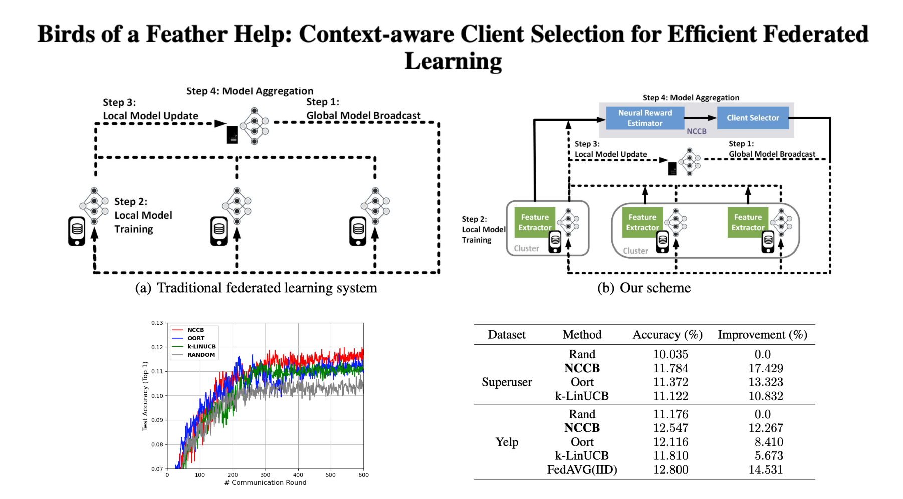

Birds of a Feather Help: Context-aware Client Selection for Efficient Federated Learning
International Workshop on Federated Learning, AAAI 2022 Oral
A novel neural combinatorial contextual bandit (NCCB) intelligently selects clients in each federated round while preserving privacy. The method surpasses the state-of-the-art Oort in both convergence speed and final accuracy.